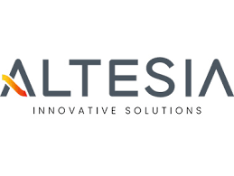
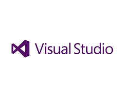
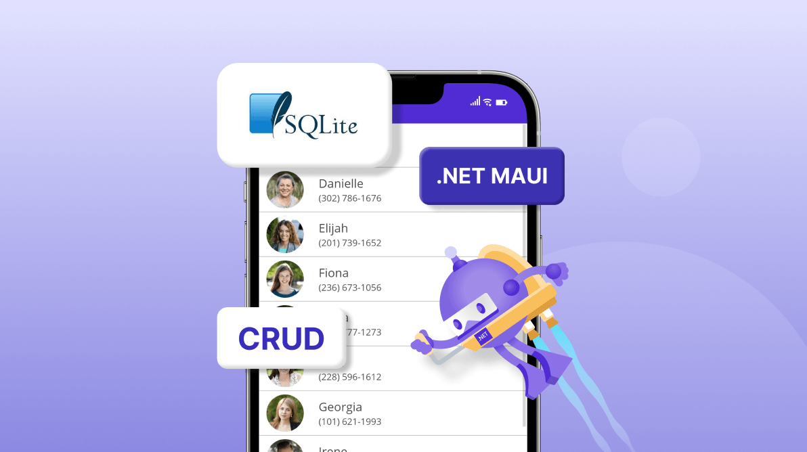
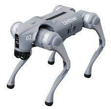

Percorso PCTO presso Altesia S.R.L.
Introduzione
Durante l’anno scolastico ho svolto il mio percorso PCTO presso Altesia S.R.L., un’azienda giovane e dinamica nel settore dell’informatica con sede a Jesi. L’ambiente professionale ma accogliente mi ha permesso di inserirmi facilmente. Ho svolto due fasi di tirocinio, una tra maggio e giugno 2024 e una a inizio del nuovo anno scolastico.
Attività Svolte
Nel primo periodo ho realizzato uno User Control in C# e approfondito l’uso di costruttori e variabili negli oggetti, sotto supervisione del responsabile aziendale. Tutto è stato svolto in Visual Studio.
Nel secondo periodo ho lavorato allo sviluppo di un’app mobile Android/iOS con .NET MAUI, tecnologia per me nuova. Dopo uno studio individuale (anche tramite video in inglese), sono riuscito a realizzare un’app base funzionante.
Ho anche assistito a una dimostrazione tecnica del “cane robot” progettato internamente, osservando le applicazioni pratiche della robotica.
Competenze Acquisite
Ho migliorato le mie competenze in C#, Visual Studio e .NET MAUI. A livello personale ho imparato a organizzarmi, gestire in autonomia lo studio e lavorare in team. L’esperienza ha completato le mie conoscenze scolastiche in programmazione a oggetti e sviluppo software.
Riflessioni Personali
L’uso di .NET MAUI è stato inizialmente complesso, ma grazie all’impegno e al supporto aziendale ho raggiunto i miei obiettivi. Un ostacolo è stata la distanza da casa, che ha richiesto una buona organizzazione. L’esperienza positiva ha rafforzato la mia scelta di proseguire con l’università in Informatica a Camerino.
Conclusione
Consiglio questa esperienza a tutti gli studenti: anche ciò che all’inizio sembra difficile può trasformarsi in un’opportunità di crescita. Ringrazio Altesia S.R.L., i colleghi e la prof.ssa Mariotti per il supporto.